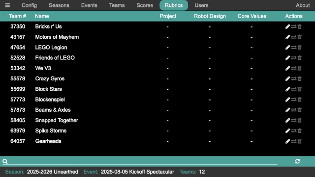

Rubrics
Note
The rubrics panel is only used when operating under the League Model.
The rubrics panel provides a way to monitor the entry of judging rubrics during an event, correct mistakes (such as entering rubrics for the wrong team), or for a league volunteer to enter the judging rubrics outside of judging. When entering rubrics outside of judging, this is where the the league volunteer enters the rubrics; when the judges entering rubrics in the juddging room, this is hopefully never used!
The rubrics panel shows a list of the teams that are attending the event, and their judging scores (if any) for the event. For each team, there is a column for each judging area with the total score for the judging area (if it exists) and a set of buttons for editing, exchanging, and deleting a rubric.
Ediing a Rubric
The button brings up a team’s rubric (the same rubric display that a judge would see). The rubric can then be entered or changed, following the same process as Judge (since it is the same thing).
Exchanging Rubrics
On occasion, a rubric is entered for the wrong team. Instead of re-entering the rubric for the correct team, the button allows the rubric to be swapped with another team. It performs an exchange; so it is safe to use if two team’s rubrucs were entered for each other.
Deleting a Rubric
The button deletes the rubric for a team. A confirmation dialog ensures that the rubric should be deleted, and if confirmed the rubric is permanently deleted.
Danger
There is no undo!
Search For Teams
The search bar at the bottom of the panel provides a means to search for a team. While the teams are displayed in numerical order, it is sometimes easier to search for them (either by name or by number). Click in the search bar, or press Ctrl-S, then start typing. The list of team is re-filtered with each change to the search. When the search bar has the keyboard focus, pressing Escape clears the contents of the search bar, displaying all the teams.
Refresh Rubrics
The button causes the list of teams and rubrics to be refreshed. This should not be required, but it can be used if there is a question. The list can also be refreshed by pressing Ctrl-R.